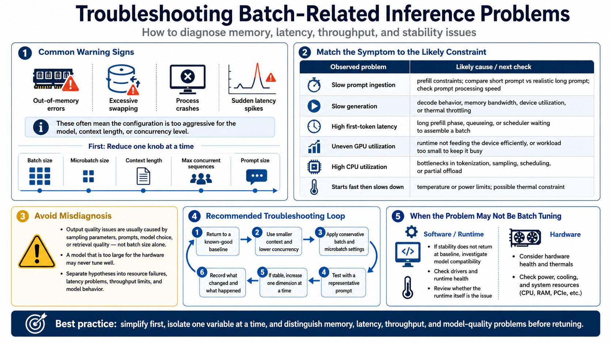

Troubleshooting Batch-Related Problems
Connecting to LMS... Progress: in progress

Narration
Batch-related problems often show up as memory failures first. Out-of-memory errors, excessive swapping, process crashes, or sudden latency spikes are signs that the configuration may be too aggressive for the model, context length, or concurrency level. Reduce the workload dimensions one at a time: batch size, microbatch size, context length, maximum concurrent sequences, or prompt size.
Slow prompt ingestion points toward prefill constraints. Test with a shorter prompt, then with the realistic long prompt, and compare prompt processing speed. Slow generation points toward decode behavior, memory bandwidth, device utilization, or thermal throttling. High first-token latency may come from a long prefill phase, a queue, or a scheduler waiting to assemble a batch.
Uneven GPU utilization can mean the runtime is not feeding the device efficiently, but it can also mean the workload is too small to keep it busy. CPU utilization can reveal bottlenecks around tokenization, sampling, scheduling, or partial offload. Temperature and power limits matter too. A system that begins fast and then slows down may be thermally constrained rather than poorly batched.
Be careful not to blame batch settings for unrelated issues. Output quality problems are often caused by sampling parameters, prompts, model choice, or retrieval quality, not batch size. A model that is simply too large for the hardware may never tune well. Troubleshooting works best when you separate resource failures, latency problems, throughput limits, and model behavior into different hypotheses.
A good troubleshooting habit is to reduce the system to a known-good baseline before chasing exotic explanations. Use a smaller context, lower concurrency, conservative batch settings, and a representative prompt. If stability returns, increase one dimension at a time. If stability does not return, the issue may be model compatibility, drivers, hardware health, or the runtime itself.